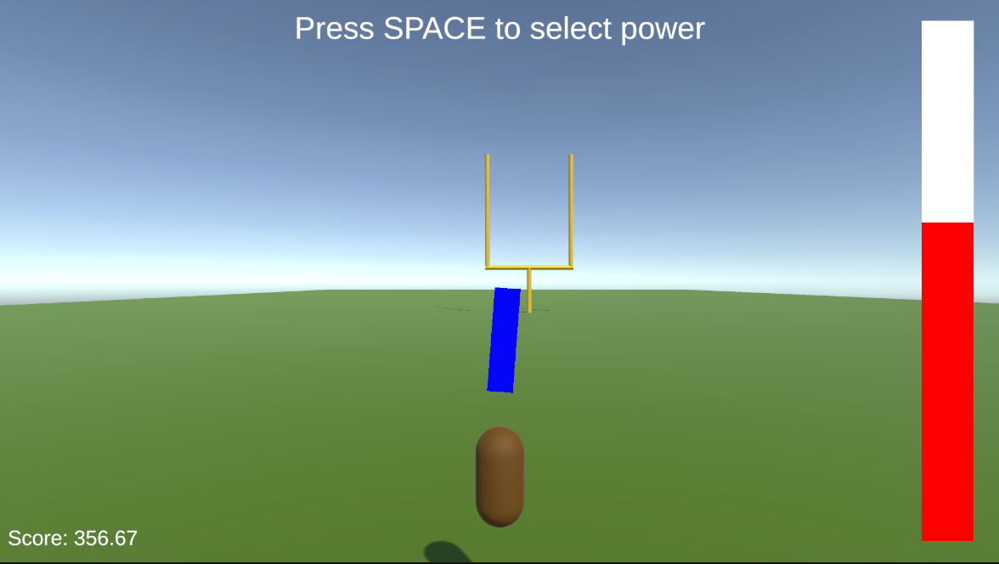
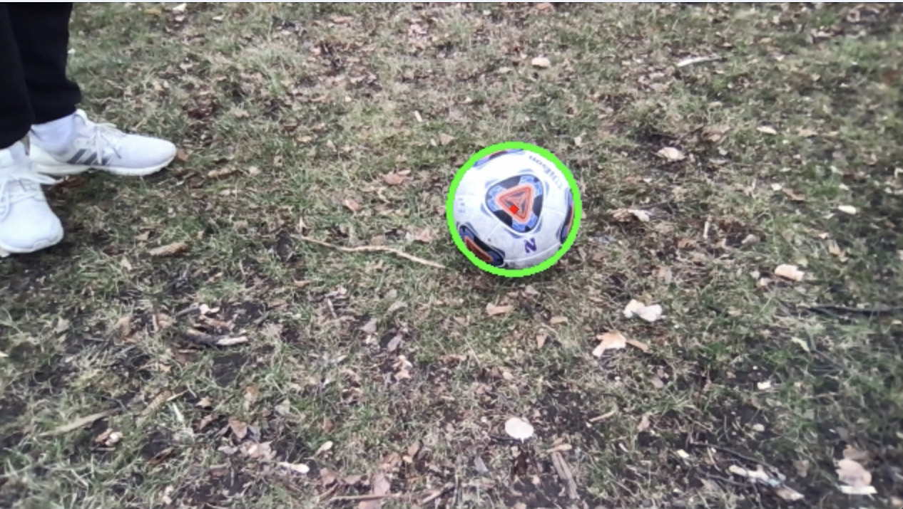

Container Date-Monitoring System at Elavon

About Elavon
Elavon Inc. is a credit card transaction processing company based in Atlanta, Georgia. It is a subsidiary of U.S. Bancorp and one of the largest credit card processors in the United States. As a software development intern at Elavon over the summer, I worked on the Converge2.0 back-end team, where my role was to create a system that monitors the date of creation for all of the company's containers.
Languages & Software Used


Project Steps
1. Save the creation timestamp as a variable within the container by updating the container's Dockerfile.
2. Write a method to access the timestamp through a GET call to the container's YAML file.
3. After showing proof of concept with Postman, edit every container's Dockerfile and YAML file.
4. Write a function to poll all container's and return the timestamps for every container in a dictionary.
5. Automate the function to run every 24 hours and notify the team when a container hasn't been updated in 90 days.
Other Projects

Field Goal Video Game
